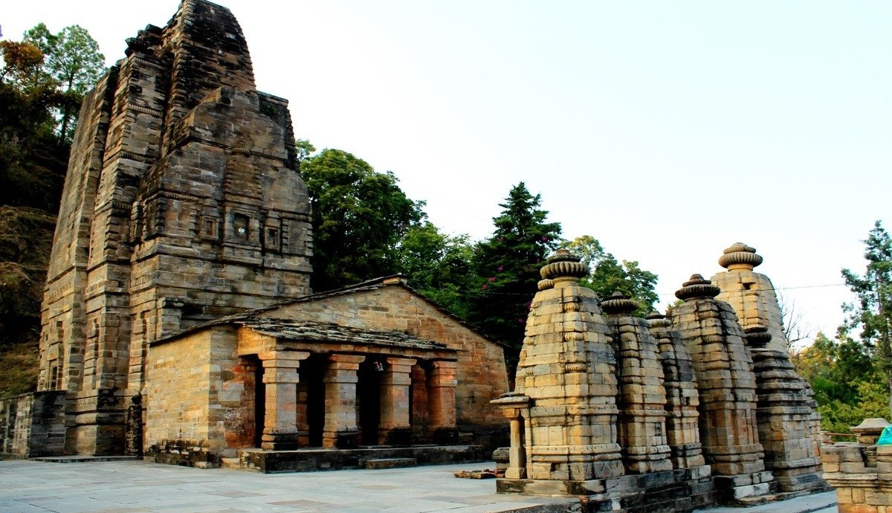
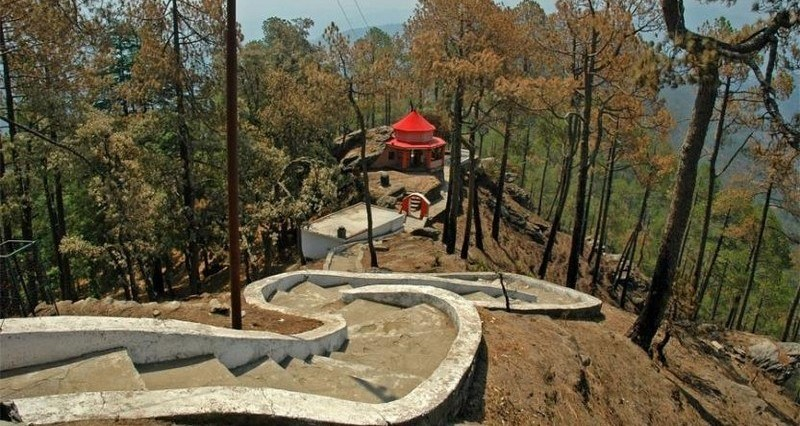
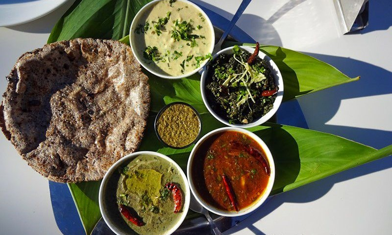
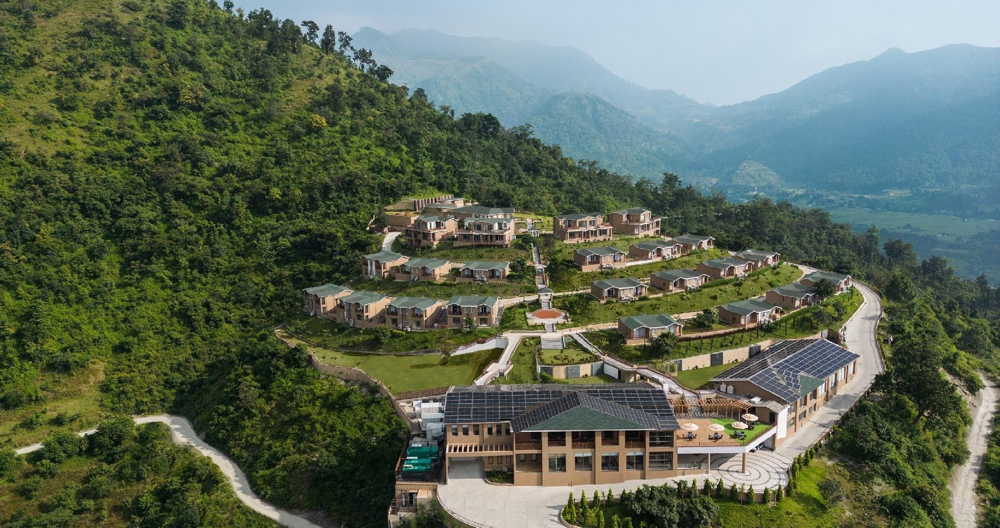
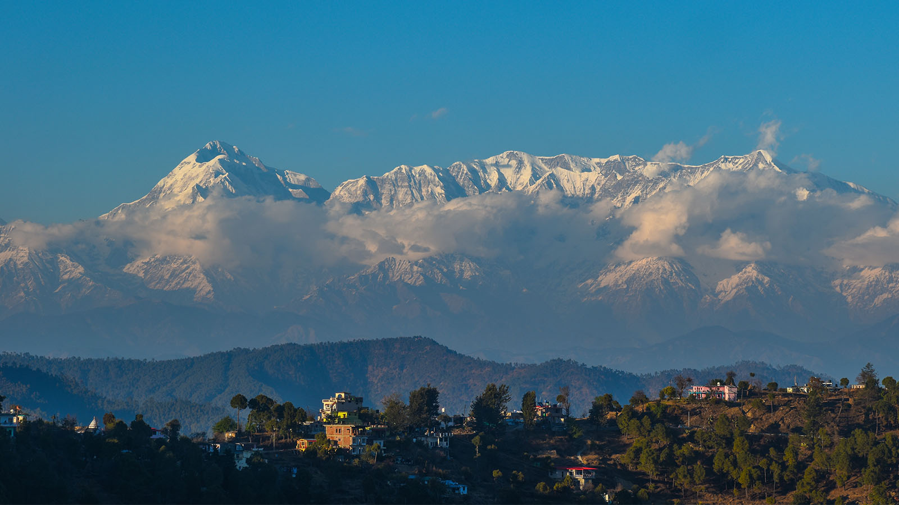
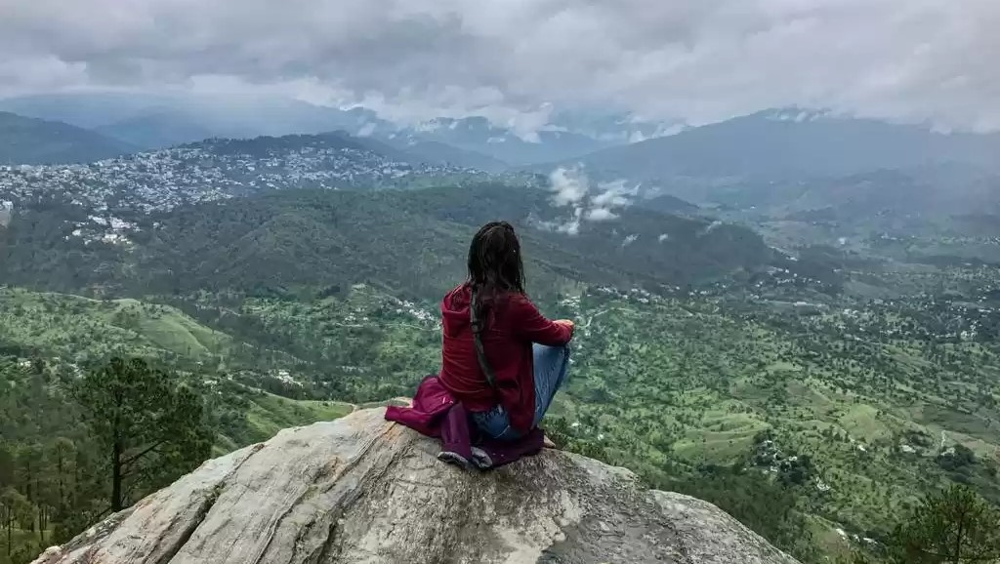
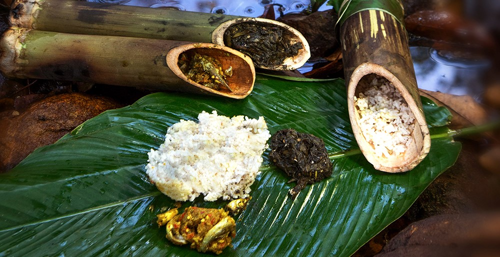
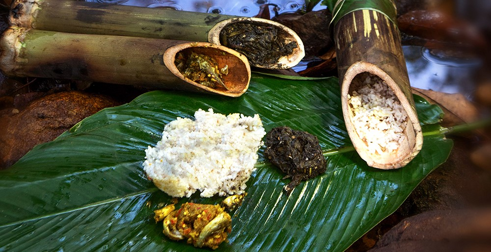
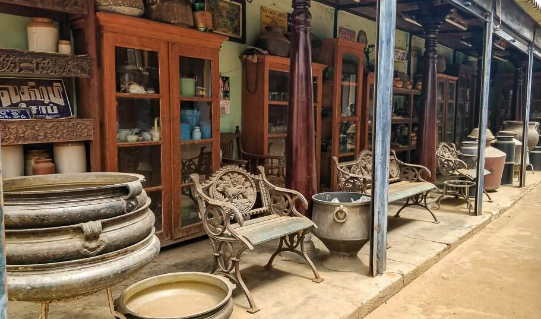
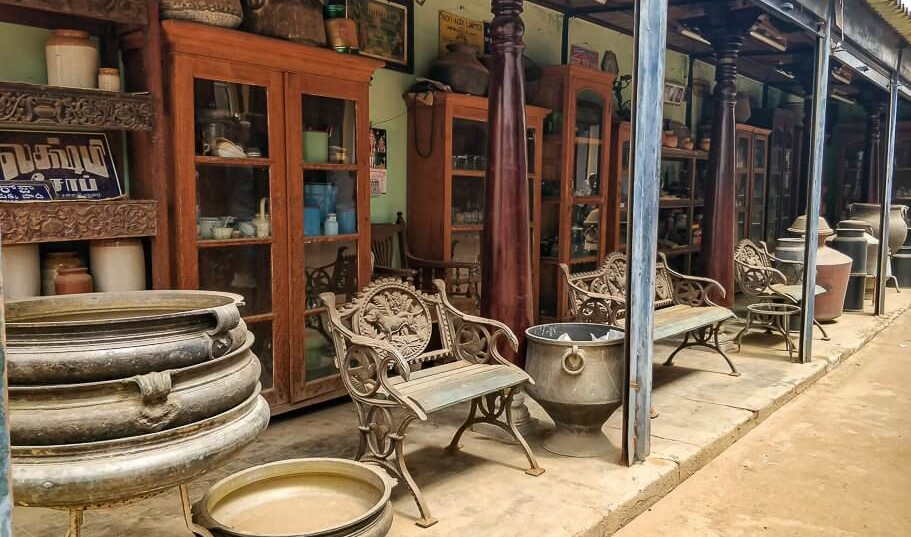

×
🏞️ Kasar Devi – Uttarakhand

Perched near Almora in Uttarakhand, Kasar Devi is a serene Himalayan
village that offers peace, panoramic views of the Nanda Devi,
Trishul, and Panchachuli peaks, and a touch of mysticism. Unlike
crowded hill stations, it’s quiet, spiritual, and perfect for slow
travellers, writers, artists, and seekers.
Specialty:
-
The place falls on the Van Allen Belt (a gap in Earth’s magnetic
field), believed to create strong spiritual and cosmic
energy—similar to Stonehenge and Machu Picchu.
-
During the 1960s–70s, it was part of the Hippie Trail, attracting
artists, poets, and thinkers worldwide. Bob Dylan, Cat Stevens,
and Allen Ginsberg are said to have visited.
-
Speciality for tourists: Blend of Himalayan views, meditation
spots, village simplicity, and spiritual vibes.
Best Time to Visit:
- October to March – Crisp winter skies, snow on peaks.
-
April to June – Pleasant weather, ideal for walks and treks.
- Avoid July–September (heavy monsoon).


Things to Do / Must-See:
- Offbeat, quiet, and spiritually powerful village.
- Known for magnetic field energy + hippie legacy.
-
Offers Himalayan views + Kumaoni culture + meditation escapes.
Food to try:
- Aloo ke Gutke – Spiced potato dish.
- Bhatt ki Churdkani – Traditional black soybean curry.
- Bal Mithai & Singori – Famous Kumaoni sweets.
-
Simple pahadi thali with seasonal greens, mandua (ragi) roti, and
fresh chutneys.


Roadmap for (2-3 days)
Day 1:
-
Arrive in Almora → Drive to Kasar Devi → Evening walk in the
village → Sunset view of Himalayan peaks.
Day 2:
-
Morning meditation at Kasar Devi Temple → Explore Crank’s Ridge
(hippie trail with pine forests and viewpoints) → Try local pahadi
meals.
Day 3:
-
Day trip to Binsar Wildlife Sanctuary (30 min away) for
birdwatching and nature trails → Return for stargazing in Kasar
Devi.


Travel Tips:
-
Stay in homestays or eco-cottages for the true village vibe.
- Carry warm clothes—nights get chilly even in summer.
-
Best for solo travellers, writers, and those seeking peace, not
for luxury seekers.
- Respect local culture and temple traditions.
Current Weather:
Loading weather...


 



 
